| |
Allgemein |
|
Hauptfenster |
|
Datei - Optionen |
|
Menüreferenz |
|
Dialogreferenz |
|
Allgemein |
Allgemeine Informationen |
Der Faxgate Client dient dazu die auf dem Faxserver gespeicherten Faxe und
Anrufe herunterzuladen und zu öffnen. Außerdem wird beim Senden von Faxen, wenn keine Faxnummer im
Dokument vorhanden ist, ein Dialog zur Abfrage der Nummer angezeigt. Eingehende Faxe, Anrufe und
optional einige andere Statusmeldungen können ebenfalls angezeigt werden.
Sämtliche Screenshots wurden unter WindowsXP im XP-Design erstellt. Je nach Platform und gewähltem
Look&Feel passt sich die Oberfläche des Programmes an und unterscheidet sich dann von den Abbildungen
in dieser Anleitung. |
| Inhalt |
Druckertreiberinstallation |
| Bei Windows-Clients erhalten beim ersten Zugriff auf den Netzwerkdrucker "Faxgate"
automatisch den auf dem Smaba-Server bereitgestellten Treiber. Andere Clients (Linux/MacOSX), mit
CUPS-Drucksystem das sich im Poll-Betrieb befindet,
erhalten die zum Drucken notwendigen Informationen direkt vom CUPS-Server auf dem Faxserver. |
| Inhalt |
Softwareinstallation |
Die Software wird im Quelltext, jar-Archiv und als Packet mit Installer angeboten.
- Quelltext: Vorraussetzung zum Compilieren ist ein JSDK >= 1.4.0, der Borland-JBuilder mit dem das Programm entwickelt wurde
ist nicht zum
Compilieren notwendig.
- jar-Archiv: Zum Betrieb des Clients muss eine Javalaufzeitumgebung (JRE) ab Version 1.4.0 installiert sein.
Erhältlich ist die aktuelle Version unter http://www.java.com. Ist die JRE
korrekt installiert kann der Faxgate Client mit "java -jar FaxgateClient.jar" oder auch per Doppel-/Einzelklick
gestartet werden
- Installer: Laden Sie sich im Downloadbereich die für ihre Plattform passende Version herunter. Wenn sich kein
JRE >= 1.4.0 auf ihrem System befindet wählen Sie bitte die Version mit integrierter VM bzw. installieren Sie vorher ein
JRE >= 1.4.0
|
| Inhalt |
Hauptfenster |
Toolbar |
|
| Die Toolbar enthält folgende Buttons: |
- Schaltet das Log Tab während der Laufzeit des
Programms um zwischen sichtbar und unsichtbar und zeigt den aktuellen Status an.
 Öffnet oder schließt die Verbindung zum
Empfangen von Nachrichten vom Faxserver und zeigt den Status der Verbindung an. Öffnet oder schließt die Verbindung zum
Empfangen von Nachrichten vom Faxserver und zeigt den Status der Verbindung an.- Stellt die SFTP-Verbindung zum Downloaden von
Faxen und Anrufen her oder trennt sie und zeigt den Status der Verbindung an.
- Ruft diese Hilfe auf.
| | Inhalt |
Kurzinfo Tab |
 |
| Nach dem ersten Start des Programms wird dieses Tab angezeigt. Darin sind die wichtigsten Schritte
zur Inbetriebnahme des Clients zusammengefasst. Wenn sie dieses Tab nicht mehr benötigen, können sie es mit
einem Klick auf "Ausblenden" dauerhaft ausblenden. Um es erneut anzuzeigen müssen sie unter
Optionen - Allgemein "Kurzinfo anzeigen" wieder aktivieren und das
Programm neustarten. "Hilfe" ruft diesen Hilfetext auf.
|
| Inhalt |
Log Tab |
| 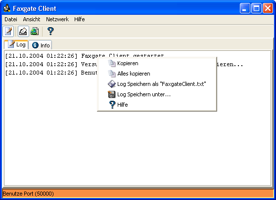 |
In diesem Tab sehen Sie die seit dem letzten Start des Programmes aufgelaufenen Meldungen.
Jede Nachricht die vom/zum Faxserver empfangen/gesendet wurde und aufgetretene Fehler werden
protokolliert. Das abgebildete Kontextmenü bietet verschiedene Möglichkeiten die Meldungen zu speichern.
Das Log Tab lässt sich mit dem Button in
der Toolbar oder dem Eintrag "Log anzeigen" im Menü "Ansicht" temporär ein-/ausschalten. Dauerhaft
wirkt sich nur die Einstellung "Log anzeigen" unter Optionen - Allgemein aus.
|
| Inhalt |
Kontextmenü |
Das Kontextmenü biete an dieser Stelle folgende Möglichkeiten:
- Kopieren: Mit "Kopieren" wird die aktuelle Auswahl in die Zwischenablage kopiert.
Von dort kann der Text in andere Anwendungen eingefügt werden
- Alles kopieren: Der komplette Inhalt des Logfensters wird mit "Alles kopieren" ausgewählt und in die
Zwischenablage kopiert. Von dort kann der Text in andere Anwendungen eingefügt werden
- Log Speichern als "FaxgateClient.txt": Der komplette Inhalt des Logfensters wird hiermit im Profilpfad/Homelaufwerk
des Benutzers unter dem der Client gestartet wurde unter dem Namen "FaxgateClient.txt" gespeichert.
- Speicher unter...: Es öffnet sich ein Dateiauswahldialog indem Sie eine Datei auswählen oder einen
neuen Dateinamen eingeben können unter dem der gesamte Inhalt des Logfensters gespeichert werden soll.
- Hilfe: Ruft diese Hilfe auf.
|
| Inhalt |
SFTP Browser |
| 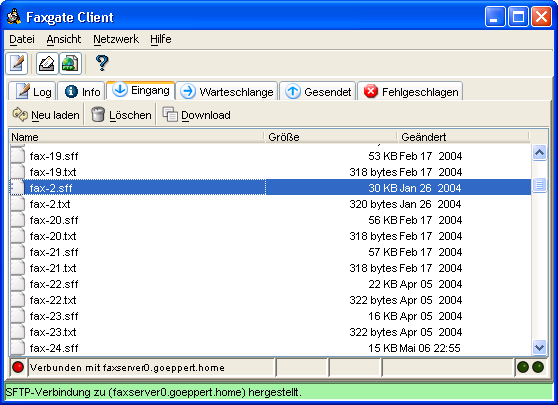 |
Nach erfolgreichem Login auf dem Server werden die Tabs "Eingang", "Warteschlange", "Gesendet"
und "Fehlgeschlagen" angezeigt.
- Um eine Datei vom Server auf den Arbeitsplatzrechner zu kopieren, muss die Datei markiert und dann auf "Download"
geklickt werden. Es muss dann ein Pfad angegeben werden, in den die gewählte Datei gespeichert werden soll. Diese Pfadangabe wird
für zukünftige Downloads gespeichert.
- Ein Doppelklick auf eine Datei lädt die Datei in das vorher angegebene Verzeichnis und öffnet sie sofort.
*.txt und *.la Dateien werden im internen Viewer geöffnet. *.sff Dateien werden im unter
Optionen - Hilfprogramme angegebenen, externen Viewer geöffnet.
- "Neu laden" aktualisiert die Liste, damit neu hinzugekommene Dateien angezeigt werden.
- "Löschen" entfernt die gewählte Datei vom Server.
|
| Inhalt |
Datei - Optionen |
Funktion der Buttons |
| 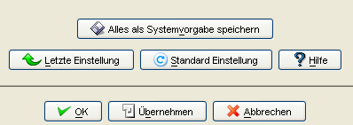 |
| Mit Ausnahme des Buttons "Alles als Systemvorgabe speichern" sind alle Buttons auf jedem Tab vorhanden. |
- OK: Speichert alle vorgenommenen Einstellungen und schließt den Dialog.
- Übernehmen: Speichert alle vorgenommenen Einstellungen, Dialog bleibt geöffnet.
- Abbrechen: Verwirft alle nicht gespeicherten Änderungen und schließt den Dialog.
- Letzte Einstellung: Setzt die Einstellungen auf dem jeweiligen Tab auf die zuletzt gespeicherten Werte zurück.
- Standard Einstellung: Setzt die Einstellungen auf dem jeweiligen Tab auf die Systemvorgaben zurück.
- Hilfe: Ruft diese Hilfe auf (Kontextsensitiv).
- Alles als Systemvorgabe speichern: Speichert sämtliche Einstellungen als Vorgabe für alle Benutzer im System.
|
| Inhalt |
Ansicht Allgemein |
 |
| Hier können folgende Einstellungen vorgenommen werden:
|
- Aussehen der Programmoberfläche: Hier kann das Design sämtlicher Komponenten des Programms umgeschaltet werden.
- Log anzeigen: Log Tab ist bei jedem Programmstart sichtbar, aktueller Status bleibt unverändert.
- Toolbar anzeigen: Toolbar ist bei jedem Programmstart sichtbar, aktueller Status bleibt unverändert.
- Kurzinfo anzeigen: Kurzinfo Tab ist bei jedem Programmstart sichtbar, aktueller Status bleibt unverändert.
|
| Inhalt |
Ansicht Netzwerk |
| 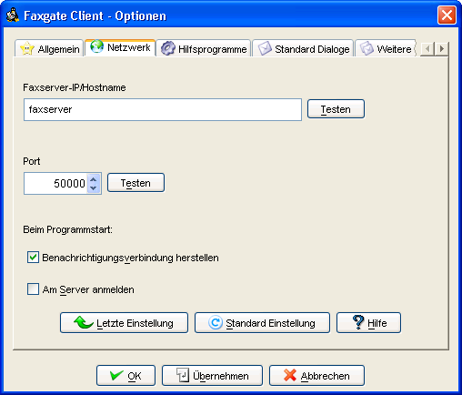 |
| Hier können folgende Einstellungen vorgenommen werden:
|
- Faxserver-IP/Hostname: Hier die IP oder den Hostnamen des Faxservers eingeben.
- Testen (IP): Testet die Erreichbarkeit des Servers.
- Port: Hier den Port für die Nachrichtenverbindung einstellen.
- Testen (Port): Prüfen ob der Port noch frei ist.
- Benachrichtigungsverbindung herstellen: Wählen ob Port für Nachrichten automatisch beim Programmstart
geöffnet werden soll.
- Am Server anmelden: Wählen ob SFTP-Verbindung automatisch beim Programmstart hergestellt werden soll.
|
| Inhalt |
Ansicht Hilfsprogramme |
| 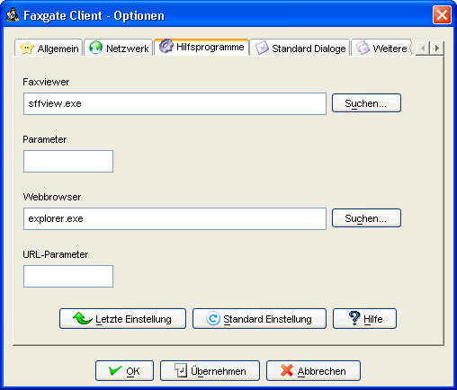 |
Hier können folgende Einstellungen vorgenommen werden:
- Faxviewer: Hier Programm angeben das *.sff-Datein anzeigen kann, z.B. IrfanView.
- Parameter: Zusätzliche Optionen zum Starten des Viewer, selten notwendig.
- Webbrowser: Hier den Browser angeben der zum Öffnen der CUPS-Homepage und Produkthomepage benutzt werden soll.
- URL-Parameter: Zusätzlcihe Option zum Starten des Browsers, selten notwendig.
|
| Inhalt |
Ansicht Standard Dialoge |
| 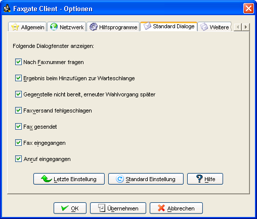 |
Hier können folgende Einstellungen vorgenommen werden:
- Folgende Dialogfenster anzeigen: Schaltet die Anzeige des jeweiligen Meldungstyps vom Server ein. Die Dialoge auf diesem
Tab sollten eingeschaltet sein.
|
| Inhalt |
Ansicht Weitere Dialoge |
| 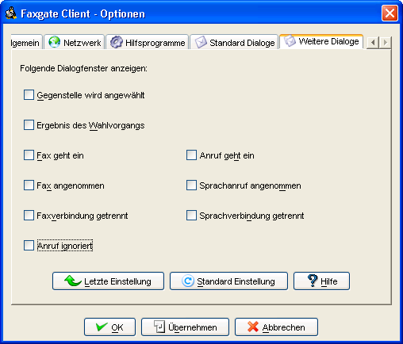 |
Hier können folgende Einstellungen vorgenommen werden:
- Folgende Dialogfenster anzeigen: Schaltet die Anzeige des jeweiligen Meldungstyps vom Server ein. Die Dialoge auf diesem
Tab sollten nur eingeschaltet sein wenn detailierte Informationen vom Server gewünscht sind.
|
| Inhalt |
Menüreferenz |
Datei |
| Das Menü Datei enthält folgende Unterpunkte: |
- Optionen: Öffnet den Dialog zum Einstellen des Programms.
- Beeenden: Schließt das Programm ohne Rückfrage.
| Ansicht |
| Das Menü Ansicht enthält folgende Unterpunkte: |
- Toobar anzeigen: Schaltet die Toolbar während der Laufzeit des Programms um zwischen sichtbar oder unsichtbar
und zeigt den aktuellen Status an.
- Log anzeigen: Schaltet das Log Tab während der Laufzeit des Programms um zwischen sichtbar und unsichtbar
und zeigt den aktuellen Status an.
| Netzwerk |
Das Menü Netzwerk enthält folgende Unterpunkte: |
- Benachrichtigungsverbindung aktiv: Öffnet oder schließt die Verbindung zum Empfangen von Nachrichten
vom Faxserver und zeigt den Status der Verbindung an.
- Dateiverbindung aktiv: Stellt die SFTP-Verbindung zum Downloaden von Faxen und Anrufen her oder trennt sie und
zeigt den Status der Verbindung an.
| Hilfe |
| Das Menü Hilfe enthält folgende Unterpunkte: |
- Anleitung: Zeigt diese Anleitung an.
- CUPS-Server: Ruft die Startseite des CUPS-Druckservers im Intranet mit dem unter Optionen -
Hilfsprogramme angegebenen Browser auf.
- Produkthomepage: Ruft die Startseite der für dieses Produkt bereitgestellten Website im Internet mit Updates und
weiteren Informationen mit dem unter Optionen - Hilfsprogramme angegebenen Browser auf.
- Programminfo: Zeigt den nachfolgend dargestellten Dialog mit Informationen zur Programmversion
und dem Author an.
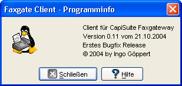
|
| Inhalt |
Dialogreferenz |
Nummernabfrage |
 |
Dieser Dialog erscheint wenn in einem Dokument keine Faxnummer gefunden werden konnte. Es muss dann eine Faxnummer
eingegeben werden, wird keine Faxnummer eingegeben muss der Versand des Faxes mit "Abbrechen" abgebrochen werden.
Buchstaben und Sonderzeichen werden aus der Eingabe gefiltert. Ein "+" zu Beginn der Eingabe wird zu "00",
Leerzeichen werden entfernt.
Wenn das Häkchen bei "Diesen Dialog wieder anzeigen" entfernt wurde, erscheint diese Abfrage nichtmehr. Sie lässt
sich unter Optionen - Dialoge wieder einschalten. |
| Inhalt |
Infodialoge |
| Die folgenden Infodialoge können je nach gewählter Konfiguration erscheinen.
Wurde bei einem Dialog das Häkchen bei "Diesen Dialog wieder anzeigen" entfernt, erscheint der jeweilige Dialog nichtmehr.
Einschalten lassen sich alle Dialoge wieder unter Optionen - Dialoge
bzw. Optionen - Weitere Dialoge. |
- Das Ergebnis des Versuchs ein Fax der Warteschlange hinzuzufügen sieht bei Erfolg wie hier dargestellt
aus. Fehler beim Hinzufügen zur Warteschlange werden mit entsprechend anderem Text signalisiert.
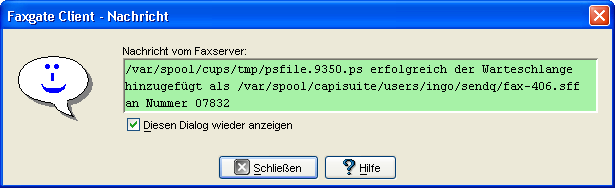
- Die Benachrichtigung über das erfolgreiche Versenden eines Faxes kann so aussehen:
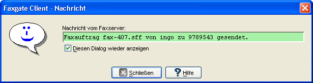
- Wird gemeldet das eben ein Fax empfangen wurde, erscheint ein solcher Dialog in dem mit
"Fax öffnen" das empfangene Fax geöffnet werden kann:
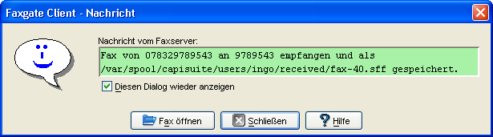
- Wird gemeldet das eben ein Anruf aufgezeichnet wurde, erscheint ein solcher Dialog in dem mit "Anruf
abspielen" der aufgezeichnete Anruf abgespielt werden kann:
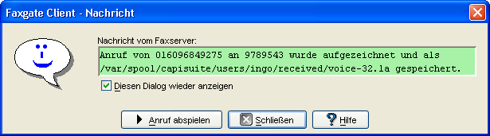
Weitere Meldungen ohne Screenshot sind:
- Information das der Faxserver augenblicklich versucht die Gegenstelle anzuwählen.
- Information das augenblicklich ein Faxanruf eingeht.
- Information das eben ein Faxanruf angenommen wurde.
- Information das ein ankommender Anruf abgewiesen wurde weil die angrufene Nummer nicht für
Anrufbeantworter oder Faxbetrieb konfiguriert ist (nur für Faxserveradministrator).
- Information das augenblicklich ein Sprachanruf eingeht.
- Information das eben ein Sprachanruf angenommen wurde.
|
| Inhalt |
Fehlermeldungen/Warnungen |
| Die folgenden Warnungen können je nach gewählter Konfiguration erscheinen.
Wurde bei einem Dialog das Häkchen bei Diesen Dialog wieder anzeigen entfernt, erscheint der jeweilige Dialog nichtmehr.
Einschalten lassen sich alle Dialoge wieder unter Optionen - Dialoge
bzw. Optionen - Weitere Dialoge. |
- Die Warnung das ein Fax nicht gesendet werden konnte mit Angabe des Zeitpunkts des nächsten
Sendeversuchs erscheint in einem solchen Dialog:
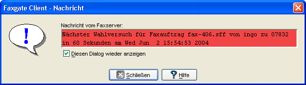
- Die Fehlermeldung das ein Fax nicht gesendet werden konnte und der Versandt abgebrochen wurde
sieht wie folgt aus:
-
Diese Warnung erscheint beim Abbruch einer Verbindung mit den decodierten CAPI-Meldungen:
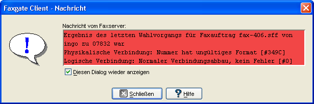
|
| Inhalt |
Wavplayer |
| 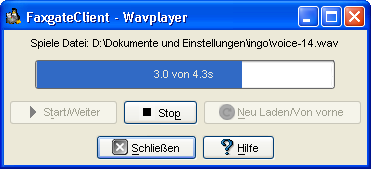 |
Dieser Dialog erscheint kurz nachdem im Dateibrowser auf eine *.la doppelgeklickt wurde. Die la-Datei wird auf dem Server in das
Wav-Format konvertiert und in das zuletzt für Downloads mit dem FaxgateClient benutzte Verzeichnis downgeloadet. Nach Abschluß
des Downloads wird versucht die Datei abzuspielen.
Mit "Stop" kann die Wiedergabe jederzeit angehalten werden, mit
"Start/Weiter" wird die Wiedergabe am gleichen Punkt wieder fortgesetzt. "Neu Laden/Von vorne"
lädt die Datei neu von der lokalen Festplatte und spielt sie von Beginn an ab.
Sollte es nicht möglich sein die Datei wiederzugeben wird die Fehlerursache am oberen Rand des Fensters angezeigt. |
| Inhalt |
Textviewer |
| 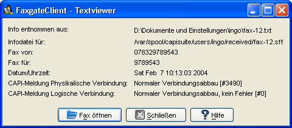 |
Dieser Dialog erscheint kurz nachdem im Dateibrowser auf eine *.txt doppelgeklickt wurde. Die txt-Datei wird in das
zuletzt für Downloads mit dem FaxgateClient benutzte Verzeichnis downgeloadet. Nach Abschluß
des Downloads wird versucht die Datei zu öffnen.
Die in der Datei enthaltenen Informationen werde decodiert und tabellarisch dargestellt. Mit einem Klick auf "Fax
öffnen" wird das zur Textdatei gehörende Fax vom Server downgeloadet und mit dem unter
Optionen - Hilfprogramme eingestellten Faxiewer geöffnet. Handelt es sich um eine
Infodatei für einen Anruf wird die zugehörige Datei mit einem Klick auf "Anruf abspielen" vom Server
downgeloadet und im oben beschriebenen Wavplayer abgespielt.
Sollte es nicht möglich sein die Textdatei zu öffnen und zu decodieren wird der Viewer wieder geschlossen und im
Logfenster eine Meldung ausgegegeben. |
| Inhalt |
|
|